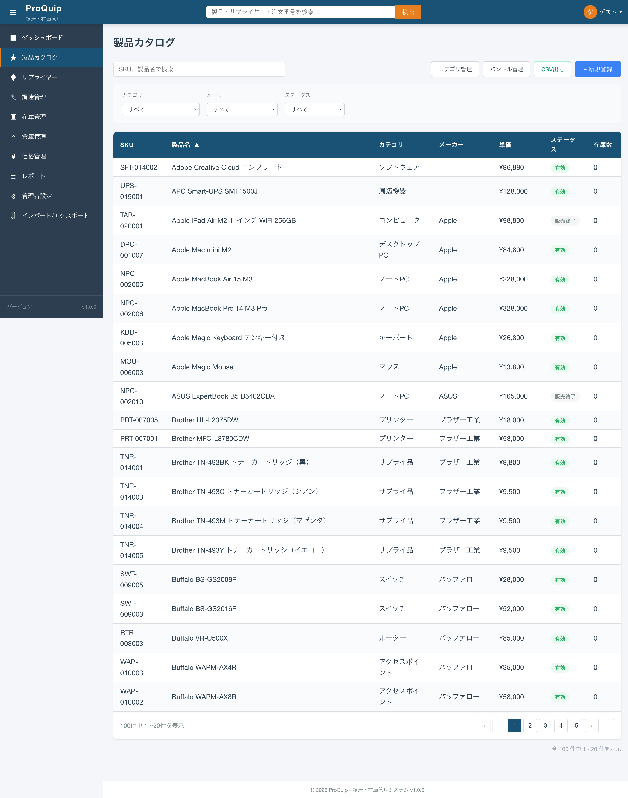
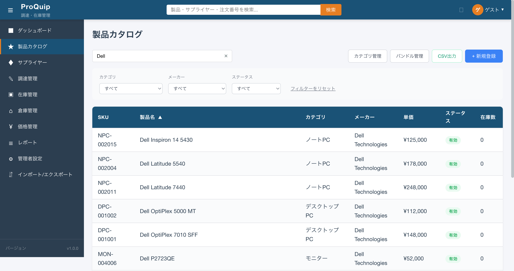
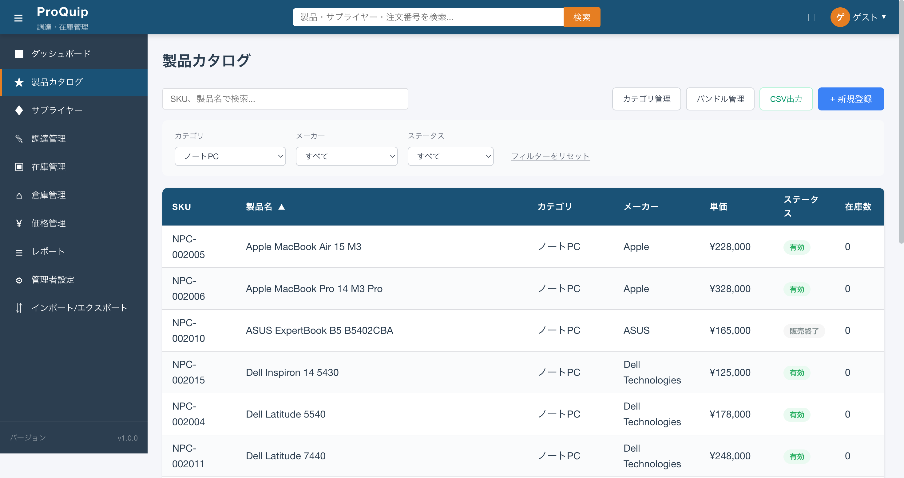
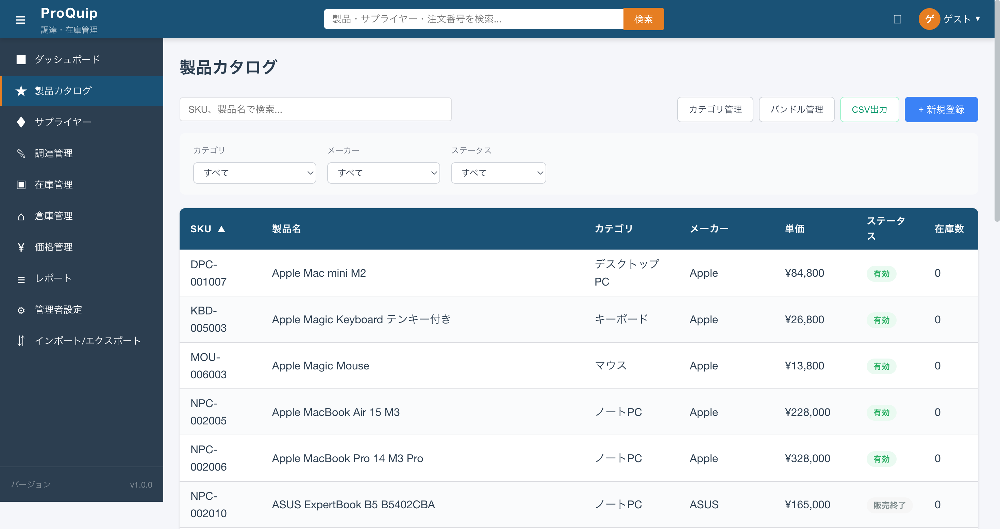

最終更新: 2026-05-24
製品一覧画面の初期表示状態。検索ボックスは画面上部左側に配置される。
screenshots/F-03/F-03-01_products_list_initial.png

SKUまたは製品名のキーワードで製品一覧をフィルタリングするテキスト入力欄。
100件の製品から目的の製品を素早く見つけるため。SKUコードと製品名の両方で検索できることで、管理者・購買担当者いずれの運用フローにも対応する。
| 項目名 | 表示条件 | 値の取得元 | 備考 |
|---|---|---|---|
| プレースホルダー「SKU、製品名で検索...」 | 入力値が空の場合 | 固定文字列 | |
| クリアボタン（×） | 入力値がある場合 | - | 入力値をクリアしてフィルタ解除 |
| 項目名 | 型 | 必須/任意 | 入力制約 | 初期値 | バリデーション | 備考 |
|---|---|---|---|---|---|---|
| 検索キーワード | text | 任意 | 制限なし | 空 | なし（フロント側） | 入力のたびにフィルタ実行（リアクティブ） |
| 操作名 | トリガー | 実行内容 | 正常時の結果 | 異常時の結果 | 状態変化 |
|---|---|---|---|---|---|
| 検索実行 | テキスト入力（inputイベント） | keyword パラメータ付きでGET /api/products を呼び出し | 一致する製品のみテーブルに表示、ページ1にリセット | - | テーブル内容がフィルタ結果に変化、「フィルターをリセット」リンクが表示される |
| クリア | ×ボタンクリック | 検索キーワードをクリアし再検索 | 全製品が表示される | - | フィルタ解除 |
「Dell」と入力すると、製品名にDellを含む製品（Dell Inspiron 14 5430, Dell Latitude 5540, Dell Latitude 7440, Dell OptiPlex 5000 MT, Dell OptiPlex 7010 SFF, Dell P2723QE等）のみが表示される。
該当する製品がない場合、テーブルに空状態が表示される（「該当する製品がありません」等）。
全認証ユーザーが利用可能。ロール別の制限なし。
キーワード入力中は結果がリアルタイムでフィルタされる。フィルタ適用中は「フィルターをリセット」リンクが表示される。
| API ID | method | path | request | response | error response | 根拠 |
|---|---|---|---|---|---|---|
| - | GET | /api/products | keyword=Dell&page=0&size=20&sort=name,asc | PageResult<ProductDTO> | - | Network通信 + ソースコード |
| ファイルパス | 関数/クラス/メソッド名 | 確認内容 |
|---|---|---|
| proquip-frontend/src/app/features/products/product-list/product-list.component.ts | onSearchChange() :157-160 | 検索キーワード変更時にpage=1リセット＋loadProducts()呼び出し |
| proquip-frontend/src/app/shared/services/product.service.ts | getProducts() :22-35 | keywordパラメータ付きでAPIリクエスト |
| proquip-web/src/main/java/com/proquip/web/resource/ProductResource.java | getProducts() :123-171 | keyword検索: 製品名/説明のLIKE検索 |
撮影条件: 「Dell」で検索した状態 ／ 備考: Dell製品のみ表示、フィルターをリセットリンク表示
screenshots/F-03/F-03-01-001_search_dell.png

High
カテゴリで製品一覧を絞り込むドロップダウンセレクト。
20カテゴリ・100製品の中から特定のカテゴリに属する製品群を素早く一覧表示するため。
| 項目名 | 型 | 必須/任意 | 入力制約 | 初期値 | バリデーション | 備考 |
|---|---|---|---|---|---|---|
| カテゴリ | select | 任意 | 20カテゴリ + 「すべて」 | すべて（空値） | なし | GET /api/products/categories から取得。親子関係あり（parentId）だがフラットに表示 |
| 項目名 | 表示条件 | 値の取得元 | 備考 |
|---|---|---|---|
| ラベル「カテゴリ」 | 常時 | 固定文字列 | |
| 選択肢リスト | 常時 | GET /api/products/categories | すべて, HDD, OS, SSD, アクセスポイント, オフィスソフト, キーボード, コンピュータ, サプライ品, スイッチ, ストレージ, ソフトウェア, デスクトップPC, ネットワーク, ノートPC, プリンター, マウス, モニター, ルーター, ワークステーション, 周辺機器（計21件） |
| 操作名 | トリガー | 実行内容 | 正常時の結果 | 異常時の結果 | 状態変化 |
|---|---|---|---|---|---|
| カテゴリ選択 | ドロップダウン変更（changeイベント） | categoryId パラメータ付きでGET /api/products を呼び出し | 選択カテゴリの製品のみ表示、ページ1にリセット | - | 「フィルターをリセット」リンクが表示される |
「ノートPC」を選択すると、ノートPCカテゴリに属する製品（Apple MacBook Air, Dell Latitude等）のみが表示される。
該当カテゴリに製品がない場合（例: ネットワーク（productCount=0））、空のテーブルが表示される。
なし。全認証ユーザーが利用可能。
カテゴリ選択中はドロップダウンに選択値が表示され、「フィルターをリセット」リンクが表示される。
| API ID | method | path | request | response | error response | 根拠 |
|---|---|---|---|---|---|---|
| - | GET | /api/products/categories | なし | Category[] (id, code, name, description, parentId, productCount) | - | Network通信 |
| - | GET | /api/products | categoryId=8&page=0&size=20 | PageResult<ProductDTO> | - | ソースコード |
| ファイルパス | 関数/クラス/メソッド名 | 確認内容 |
|---|---|---|
| proquip-frontend/src/app/features/products/product-list/product-list.component.ts | loadCategories(), onFilterChange() | カテゴリリスト取得、フィルタ変更時のAPIリクエスト |
| proquip-frontend/src/app/shared/services/product.service.ts | getCategories() :67-69 | GET /api/products/categories |
撮影条件: カテゴリ「ノートPC」選択時 ／ 備考: ノートPCのみ表示、フィルターをリセットリンク表示
screenshots/F-03/F-03-01-002_filter_category_notebook.png

High
メーカーで製品一覧を絞り込むドロップダウンセレクト。
特定メーカーの取扱製品を一覧で確認し、メーカー別の在庫状況や価格帯を把握するため。
| 項目名 | 型 | 必須/任意 | 入力制約 | 初期値 | バリデーション | 備考 |
|---|---|---|---|---|---|---|
| メーカー | select | 任意 | 15メーカー + 「すべて」 | すべて（空値） | なし | メーカーリストの取得方法に技術的負債あり（後述） |
| 項目名 | 表示条件 | 値の取得元 | 備考 |
|---|---|---|---|
| ラベル「メーカー」 | 常時 | 固定文字列 | |
| 選択肢リスト | 常時 | GET /api/products?page=0&size=1000 → 製品のmanufacturerNameからユニーク抽出 | Apple, ASUS, Cisco Systems, Dell Technologies, EIZO, HP Inc., Lenovo, Microsoft, NEC, エプソン, エレコム, キヤノン, バッファロー, ブラザー工業, 富士通（計15社） |
| 操作名 | トリガー | 実行内容 | 正常時の結果 | 異常時の結果 | 状態変化 |
|---|---|---|---|---|---|
| メーカー選択 | ドロップダウン変更 | manufacturerId パラメータ付きでGET /api/products を呼び出し | 選択メーカーの製品のみ表示 | - | 「フィルターをリセット」リンクが表示される |
メーカー選択により当該メーカーの製品のみが表示される。他のフィルタ（カテゴリ・ステータス・検索）との組み合わせも可能。
該当メーカーの製品がない場合、空テーブル表示。
なし。全認証ユーザーが利用可能。
メーカー選択中は「フィルターをリセット」リンクが表示される。
| API ID | method | path | request | response | error response | 根拠 |
|---|---|---|---|---|---|---|
| - | GET | /api/products | page=0&size=1000 | PageResult<ProductDTO>（メーカー名抽出用に全件取得） | - | Network通信 |
| - | GET | /api/products | manufacturerId=1&page=0&size=20 | PageResult<ProductDTO> | - | ソースコード |
| ファイルパス | 関数/クラス/メソッド名 | 確認内容 |
|---|---|---|
| proquip-frontend/src/app/features/products/product-list/product-list.component.ts | loadManufacturers() :71 | 全製品(size=1000)を取得し、manufacturerNameでユニーク抽出（技術的負債） |
High
製品ステータスで一覧を絞り込むドロップダウンセレクト。
有効な製品のみ、または廃番製品のみを表示するなど、製品のライフサイクル状態に基づいた管理を行うため。
| 項目名 | 型 | 必須/任意 | 入力制約 | 初期値 | バリデーション | 備考 |
|---|---|---|---|---|---|---|
| ステータス | select | 任意 | 4ステータス + 「すべて」 | すべて（空値） | なし | フロントエンドで固定定義 |
| 項目名 | 表示条件 | 値の取得元 | 備考 |
|---|---|---|---|
| ラベル「ステータス」 | 常時 | 固定文字列 | |
| 選択肢: すべて | 常時 | 固定 | value="" |
| 選択肢: 有効 | 常時 | 固定 | value="ACTIVE" |
| 選択肢: 無効 | 常時 | 固定 | value="INACTIVE" |
| 選択肢: 廃番 | 常時 | 固定 | value="DISCONTINUED" |
| 選択肢: 保留 | 常時 | 固定 | value="PENDING" |
| 操作名 | トリガー | 実行内容 | 正常時の結果 | 異常時の結果 | 状態変化 |
|---|---|---|---|---|---|
| ステータス選択 | ドロップダウン変更 | status パラメータ付きでGET /api/products を呼び出し | 選択ステータスの製品のみ表示 | - | 「フィルターをリセット」リンクが表示される |
ステータス選択で該当ステータスの製品のみ表示される。カテゴリ・メーカー・検索との組み合わせフィルタが可能。
該当ステータスの製品がない場合、空テーブル表示。
なし。全認証ユーザーが利用可能。
ステータス選択中は「フィルターをリセット」リンクが表示される。
| ファイルパス | 関数/クラス/メソッド名 | 確認内容 |
|---|---|---|
| proquip-frontend/src/app/features/products/product-list/product-list.component.ts | statusLabels :75-79 | ACTIVE→有効, INACTIVE→無効, DISCONTINUED→廃番, PENDING→保留 |
| proquip-frontend/src/app/shared/utils/status.utils.ts | getProductStatusLabel() :51-56 | 同上のマッピング |
| proquip-common/.../ProductStatus.java | enum ProductStatus | DISCONTINUED→"販売終了" ※フロントとバックエンドで表示名不一致 |
High
製品の主要情報を一覧表示するデータテーブル。SKU・製品名・カテゴリ・メーカー・単価・ステータス・在庫数の7列構成。
製品カタログの全体像を把握し、個別製品の状態（価格・在庫・ステータス）を比較確認するため。行クリックで詳細画面に遷移する入口として機能する。
| 項目名 | 表示条件 | 値の取得元 | 備考 |
|---|---|---|---|
| SKU | 常時 | ProductDTO.sku | 幅120px。例: DPC-001007, NPC-002005 |
| 製品名 | 常時 | ProductDTO.name | 可変幅。デフォルトソート列 |
| カテゴリ | 常時 | ProductDTO.categoryName | 幅140px。例: デスクトップPC, ノートPC |
| メーカー | 常時 | ProductDTO.manufacturerName | 幅140px。メーカー未設定の場合は空欄 |
| 単価 | 常時 | ProductDTO.unitPrice | 幅120px。通貨フォーマット: ¥84,800 |
| ステータス | 常時 | ProductDTO.status → ラベル変換 | 幅100px。有効（緑）, 無効, 廃番/販売終了（灰）, 保留 |
| 在庫数 | 常時 | ProductDTO.stockQuantity | 幅80px。数値フォーマット |
| 操作名 | トリガー | 実行内容 | 正常時の結果 | 異常時の結果 | 状態変化 |
|---|---|---|---|---|---|
| 行クリック | テーブル行クリック | /products/:id へルーター遷移 | 製品詳細画面に遷移 | - | 画面遷移 |
初期表示で全100件中1〜20件を製品名昇順で表示。各行にはSKU・製品名・カテゴリ・メーカー・単価（¥カンマ区切り）・ステータス（色付きラベル）・在庫数が表示される。行にカーソルを合わせるとポインタに変化。
フィルタ結果が0件の場合、テーブル本体の代わりに空状態メッセージが表示される。
なし。全認証ユーザーが全製品を閲覧可能。ユーザーごとのデータフィルタリングなし。
検索・フィルタ・ソート・ページ切替でテーブル内容が動的に更新される。
| API ID | method | path | request | response | error response | 根拠 |
|---|---|---|---|---|---|---|
| - | GET | /api/products | page=0&size=20&sort=name,asc | PageResult: content[](id,sku,name,categoryName,manufacturerName,unitPrice,status,stockQuantity...), totalElements:100, totalPages:5 | - | Network通信 + ソースコード |
| ファイルパス | 関数/クラス/メソッド名 | 確認内容 |
|---|---|---|
| proquip-frontend/.../product-list.component.html | テンプレート :67-78 | 7列テーブル定義、行クリック遷移 |
| proquip-frontend/.../product-list.component.ts | loadProducts() :110-130 | APIリクエスト、結果バインド |
| proquip-web/.../ProductResource.java | getProducts() :123-171 | ページング、フィルタ、在庫数N+1取得 |
| proquip-common/.../ProductDTO.java | class ProductDTO | レスポンスフィールド定義 |
High
テーブルの列ヘッダクリックによるソート切り替え機能。
製品をSKU順・名前順・単価順・カテゴリ順など、目的に応じた並び替えで効率的に確認するため。
| 項目名 | 表示条件 | 値の取得元 | 備考 |
|---|---|---|---|
| ソートインジケータ ▲ | 昇順ソート中の列 | - | 列名の右に表示 |
| ソートインジケータ ▼ | 降順ソート中の列 | - | 列名の右に表示 |
| 操作名 | トリガー | 実行内容 | 正常時の結果 | 異常時の結果 | 状態変化 |
|---|---|---|---|---|---|
| ソート切替 | ソート可能列ヘッダクリック | sort パラメータ変更でGET /api/products を呼び出し | テーブルがソート順に再表示 | - | アクティブ列にソートインジケータ表示（▲/▼） |
初期状態: 製品名 ▲（昇順）。SKUヘッダクリック → SKU ▲（昇順）。再度SKUクリック → SKU ▼（降順）。ソートはサーバーサイドで実行（sort=sku,desc 等のパラメータ）。
| 列名 | ソートパラメータ | CSS class |
|---|---|---|
| SKU | sku | sortable |
| 製品名 | name | sortable |
| カテゴリ | categoryName | sortable |
| メーカー | manufacturerName | sortable |
| 単価 | unitPrice | sortable |
| ステータス | status | sortable |
| 在庫数 | - | （ソート不可） |
なし。
| ファイルパス | 関数/クラス/メソッド名 | 確認内容 |
|---|---|---|
| proquip-frontend/.../product-list.component.ts | onSortChange() :183-187 | ソート列・方向更新、loadProducts()再呼び出し |
| proquip-frontend/.../product-list.component.ts | loadProducts() :115 | sort="${sortColumn},${sortDirection}" 形式でAPIパラメータ構築 |
撮影条件: SKU昇順ソート時 ／ 備考: SKU ▲ インジケータ表示
screenshots/F-03/F-03-01-006_sort_sku_asc.png

High
製品一覧のページ切り替えナビゲーション。20件/ページ表示で、全100件を5ページに分割。
全100件の製品を一度に表示するとパフォーマンスとユーザビリティが低下するため、ページ分割で管理する。
| 項目名 | 表示条件 | 値の取得元 | 備考 |
|---|---|---|---|
| 件数情報「100件中 1〜20件を表示」 | 常時 | APIレスポンスのtotalElements, page, size | テーブル下部左側 |
| 全件表示「全 100 件中 1 - 20 件を表示」 | 常時 | 同上 | ページネーション下部右寄り |
| 先頭ページボタン « | 常時 | - | 1ページ目の場合はdisabled |
| 前ページボタン ‹ | 常時 | - | 1ページ目の場合はdisabled |
| ページ番号ボタン 1〜5 | 常時 | totalPages | 現在ページはactiveクラス（青背景） |
| 次ページボタン › | 常時 | - | 最終ページの場合はdisabled |
| 末尾ページボタン » | 常時 | - | 最終ページの場合はdisabled |
| 操作名 | トリガー | 実行内容 | 正常時の結果 | 異常時の結果 | 状態変化 |
|---|---|---|---|---|---|
| ページ番号クリック | ページ番号ボタンクリック | page パラメータ変更でGET /api/products を呼び出し | 指定ページの20件が表示 | - | アクティブページ番号が切り替わる |
| 先頭ページ | « ボタンクリック | page=0 でAPI呼び出し | 1ページ目を表示 | - | 1ページ目でdisabled |
| 前ページ | ‹ ボタンクリック | page=currentPage-1 でAPI呼び出し | 前ページを表示 | - | |
| 次ページ | › ボタンクリック | page=currentPage+1 でAPI呼び出し | 次ページを表示 | - | |
| 末尾ページ | » ボタンクリック | page=totalPages-1 でAPI呼び出し | 最終ページを表示 | - | 最終ページでdisabled |
初期表示: 1ページ目（100件中 1〜20件）。ページ番号2をクリック → 21〜40件目を表示。検索・フィルタを適用するとページは1にリセットされる。
フィルタ結果が20件以下の場合、ページングは「1件中 1〜N件を表示」となり、ページ番号は1のみ。
なし。
| ファイルパス | 関数/クラス/メソッド名 | 確認内容 |
|---|---|---|
| proquip-frontend/.../product-list.component.ts | onPageChange() :174-178 | ページ変更時のAPIリクエスト |
| proquip-frontend/.../product-list.component.ts | pageSize :44 | デフォルトページサイズ: 20 |
High
カテゴリ管理画面（/products/categories）へ遷移するボタン。
製品カタログのカテゴリ体系を管理（追加・編集・削除・並び替え）するための入口。
| 項目名 | 表示条件 | 値の取得元 | 備考 |
|---|---|---|---|
| ボタンラベル「カテゴリ管理」 | 常時 | 固定文字列 | btn-secondary スタイル（白背景、ボーダー付き） |
| 操作名 | トリガー | 実行内容 | 正常時の結果 | 異常時の結果 | 状態変化 |
|---|---|---|---|---|---|
| カテゴリ管理画面遷移 | ボタンクリック | router.navigate(['/products/categories']) | カテゴリ管理画面に遷移 | - | 画面遷移 |
なし。全認証ユーザーが表示・クリック可能。カテゴリ管理画面側の権限制御は F-03-03 で確認。
High
バンドル管理画面（/products/bundles）へ遷移するボタン。
複数製品をセットにしたバンドル商品の管理（作成・編集・削除）を行うための入口。
| 項目名 | 表示条件 | 値の取得元 | 備考 |
|---|---|---|---|
| ボタンラベル「バンドル管理」 | 常時 | 固定文字列 | btn-secondary スタイル |
| 操作名 | トリガー | 実行内容 | 正常時の結果 | 異常時の結果 | 状態変化 |
|---|---|---|---|---|---|
| バンドル管理画面遷移 | ボタンクリック | router.navigate(['/products/bundles']) | バンドル管理画面に遷移 | - | 画面遷移 |
なし。全認証ユーザーが表示・クリック可能。
High
製品一覧をCSVファイルとしてダウンロードするボタン。
製品カタログのデータをExcel等の外部ツールで分析・加工するため。在庫棚卸や価格見直しの業務に利用。
| 項目名 | 表示条件 | 値の取得元 | 備考 |
|---|---|---|---|
| ボタンラベル「CSV出力」 | 常時 | 固定文字列 | btn-export スタイル（オレンジ枠線） |
| 操作名 | トリガー | 実行内容 | 正常時の結果 | 異常時の結果 | 状態変化 |
|---|---|---|---|---|---|
| CSV出力 | ボタンクリック | GET /api/products?page=0&size=10000 を呼び出し、クライアントサイドでCSV生成・ダウンロード | products_YYYY-MM-DD.csv がダウンロードされる | - | ブラウザのダウンロードダイアログ表示 |
クリックで最大10,000件の製品データをCSV形式でダウンロード。CSV内容: SKU, 製品名, カテゴリ, メーカー, 単価, ステータス。UTF-8 BOM付きでExcel互換。現在のフィルタ条件は適用されず全件エクスポート。
APIエラー時の挙動はソースコードからは未確認。
なし。全認証ユーザーがCSV出力可能。
| ファイルパス | 関数/クラス/メソッド名 | 確認内容 |
|---|---|---|
| proquip-frontend/.../product-list.component.ts | exportCsv() :221-267 | クライアントサイドCSV生成。size=10000で全件取得→BOM付きCSV文字列生成→Blobダウンロード |
High
製品新規登録画面（/products/new）へ遷移するボタン。
新しい製品をカタログに追加するための入口。
| 項目名 | 表示条件 | 値の取得元 | 備考 |
|---|---|---|---|
| ボタンラベル「+ 新規登録」 | 常時 | 固定文字列 | btn-primary スタイル（緑背景、白文字） |
| 操作名 | トリガー | 実行内容 | 正常時の結果 | 異常時の結果 | 状態変化 |
|---|---|---|---|---|---|
| 新規登録画面遷移 | ボタンクリック | router.navigate(['/products/new']) | 製品新規登録画面に遷移 | - | 画面遷移 |
なし。全認証ユーザーが表示・クリック可能。本来はADMIN/BUYER等に限定すべきだが、@RolesAllowed未設定（技術的負債）。
High
テーブルの製品行をクリックして製品詳細画面に遷移する操作。
一覧から個別製品の詳細情報（仕様・画像・サプライヤー・在庫・変更履歴など）を確認するための導線。
| 操作名 | トリガー | 実行内容 | 正常時の結果 | 異常時の結果 | 状態変化 |
|---|---|---|---|---|---|
| 製品詳細遷移 | テーブル行（tr.data-row）クリック | router.navigate(['/products', product.id]) | /products/:id に遷移（例: /products/98） | - | 画面遷移 |
Apple iPad Air M2行クリック → /products/98 に遷移し、製品詳細画面が表示される（製品名、SKU、7タブ構成の詳細情報）。
なし。全認証ユーザーが全製品の詳細を閲覧可能。
行ホバー時にカーソルがポインタに変化（cursor: pointer）。クリックで製品詳細画面に遷移。
| ファイルパス | 関数/クラス/メソッド名 | 確認内容 |
|---|---|---|
| proquip-frontend/.../product-list.component.html | tr.data-row (click)="onProductClick(product)" | 行クリックイベントバインド |
| proquip-frontend/.../product-list.component.ts | onProductClick() | router.navigate(['/products', product.id]) |
High